Welcome new Hunters!
We’re so glad that you’re taking the first step into what will soon be the highlight of your year – the MIT Mystery Hunt! Friday at noon, we will all be transported into the wonderful world of the Hunt, where reality melts away and puzzles are life.
This set of puzzles is designed to help you get used to the kind of puzzles that you are going to see tomorrow. It focuses on the kind of puzzles that tend to show up in the Mystery Hunt, so even if you’re someone who has solved puzzlehunt puzzles before, there should be puzzles and information to help you here.
There are 9 puzzles in this set, along with a metapuzzle that uses the answers to the nine puzzles. Each puzzle has an intro to the puzzle type above it, along with lots of hints as to how to approach the puzzle below it. Don’t be afraid to use the hints! You are not expected to be able to solve all of these right away without them, and the hints will give you tips and approaches that will be helpful in the Hunt overall. Each puzzle also contains an answer checker which you may use to check your answer, along with any intermediate messages. Note that this is all implemented in Javascript, which means that it will not save your progress if the page reloads. You should keep track of your progress in a separate place. You’ll need a place to do scratch work for the puzzles anyway.
Do note that you are allowed to work with other people, use the internet and otherwise take advantage of any resources that you have to try these puzzles. These puzzles are to prepare you for the Mystery Hunt, and since you have all of those resources for the Hunt, they should be okay for these puzzles as well. The one thing that I ask that you don’t do is please don’t look at the source code. I am a bad coder and there are puzzle answers in plaintext in the Javascript files. But also, these are designed to teach you, and just looking at the answers doesn’t help you learn.
If you have any questions, feel free to ask. During the How-to-Hunt seminar, please ask one of the Palindrome members. Afterwards, feel free to email Jen at iammars21 AT gmail DOT com.
Good luck, and happy hunting!
KWRO*URPB EU SWAEUR -T APBS ER S SREUS SEUT TOR SEPB TER
One of the great things about the puzzles in the MIT Mystery Hunt is that we can assume that there is a group of people indoors putting their brain power for hours of uninterrupted time on each puzzle. This means that Mystery Hunt puzzles can go deeper into very specialist realms of knowledge than many other puzzle hunts. There are some puzzles about these specialist realms where the puzzle writer assumes that no one knows about it at the start of the Hunt, and so therefore part of the puzzle solving is becoming enough of an expert to solve the puzzle.
Take the 2022 puzzle Large-scale Anthropomorphism. This puzzle is about Dai Shogi, a larger variant of Shogi. To solve this puzzle, a team first had to identify that this represents Dai Shogi, construct the board, then learn enough of it in order to solve the mate in 6 problem. This was made more complicated in that the mate was constructed in such a way that white had to make an “Igui” move, which is a type of move where a piece captures but doesn’t move, so you really had to know your stuff. This puzzle would be completely unreasonable in a puzzle hunt like DASH or BAPHL, where people are moving around from place to place, but in the Mystery Hunt, this is fair game.
This kind of puzzle has been a staple of the Mystery Hunt ever since the days where you could challenge Hunters by giving them something written in a foreign language and then check out the only book in the library system about that language. Now you might get lucky – maybe you have a person on your team who is familiar with Dai Shogi. If you do, congratulations! You’ve got a much easier puzzle. But otherwise, enjoy the journey that you’re about to be on, and you’ll get a fun story for :parties later.
This puzzle is designed to capture this feeling while also being significantly shorter than Becoming an Expert puzzles usually are. In the puzzle notes down at the bottom I’ve written some ideas for how this puzzle be written for a full Hunt-level puzzle.
Or at least, I assume it would make a good story. It would be a good story for the kinds of parties I get invited to.
:How the heck do I get started?
:I know what this is, but now what do I do?
:I’ve translated it, now what do I do?
:I'm hopelessly stuck. Get me off the current part that I'm on.
Your first goal should be to figure out what exactly this is. There are a couple things you might try:
The most straightforward thing to do would be to try to translate it. You can either try to translate it by hand or by using a program to do so. While writing this puzzle, I could not find any in-browser translators for this, and this is too short for me to justify downloading and installing a specialist program on my computer to translate this, so I would just do this by hand.
When you do it by hand, you can either look up a dictionary or just try to sound it out. Either one seems fine, although note that if you try to sound it out, you won’t be able to get the first word. (You don’t need to translate it though, so don’t worry too much.)
It just tells you the answer.
:Step 1 – Figure out what this text is
:Step 2 – Translate the text
This text is stenographer shorthand.
The easiest way to figure this out would be to google the first word, but also doing some searching about stenography based on the flavor text works.
Text can either be translated by hand (with a table such as the one on the Wikipedia page), or by looking up a Plover dictionary online. The translated sentence is: “YOUR HONOR, I SWEAR THE ANSWER IS VISITOR CENTER.” The answer is VISITOR CENTER.
There’s a certain simplicity to black box puzzles. You put a set of inputs in, you get a set of inputs out. The puzzle writer theoretically doesn’t need to write specific clues to get you to learn certain things at certain times – the solver just blazes their own trail. Now of course, that’s incredibly simplistic, a lot of work goes into writing one of these puzzles, but the vibe is definitely there. Unlike other puzzles with fixed clues, you get to decide yourself what you’ll use to figure things out.
Good black box puzzles elicit a wonderful feeling inside as you solve them. As you start to uncover more and more information, you can start to see the bigger picture. But this being a Mystery Hunt puzzle, you still need to get an answer. Black box puzzles can accomplish this all sorts of ways, whether it’s literally telling you to evaluate something that the black box cannot evaluate itself, or finding some pattern in the rules to do something weird with the box.
A great example of this is the Xbox, a puzzle from the Famine Games. When you have time, watch this video about solving it. While it’s not a Mystery Hunt puzzle, it’s the best black box puzzle that I know of.
:How the heck do I get started?
:I know what I can put in, but where do I go from here?
:I don't really understand what words I should be trying.
:How do I figure out the ✅s?
:I understand what's going on behind the scenes. How do I get an answer?
:I'm hopelessly stuck. Get me off the current part that I'm on.
The first thing question you want to answer is "What kinds of input does this puzzle find acceptable?". Some ideas of things you might want to try:
Once you know the answers to these questions, you can then start to look more deeply at the results.
Black Box puzzles are all about making theories about what is going on behind the scenes, and then testing those theories. The best tool you have to do that is to try words and then try slight variations on them. Try words with one letter changed, try words that are anagrams of words that you chose before, try words that contain words that you’ve tried before. Any of these small changes can possibly tell you some information about what is going on behind the scenes.
Some suggested words to try:
BA/BASK/BASKET/BASKETRY
MESA/SAME/SAFE
MESA/THEM
These sets of words should allow you to make some educated guesses about what’s going on behind the scenes. You can come up with other examples that are similar to confirm them.
The best way to figure out which bigrams are giving the ✅s is to just try a bunch and keep track of what works and what doesn’t work. There is a pattern to which ones give a ✅ and which ones give an ❌.
If you don’t recognize that set, try putting it into Google. (It’s a good set to recognize overall. It shows up a lot in the Hunt.)
This puzzle doesn’t really force you down one path to get the answer. There are two main ways of solving it, but you’ll likely use a little from both paths to get your answer.
Note that there are some bigrams that give numbers instead of/in addition to other emojis. These will help find the answer. In addition, the facts that you get from ✅s give you information about the answer. The more different facts you can get, the more you will be able to narrow the answer down.
I wouldn’t recommend trying to find words with all 676 different possible bigrams to test in the checker, but with some clever trial and error, you may be able to reduce that significantly.
:Step 1: Figure out what kind of words you can put in the box
:Step 2: Figure out how the emojis are generated
:Step 3: Use that info to figure out the answer
The box will process words from the ENABLE wordlist that have an even number of letters.
There are lots of ways of getting this, but here is one possibility:
First, figure out that the box is looking for English words. Try a couple common English words, then also keysmash and see what happens. Thankfully, when we enter something that isn’t a word, it tells us that we need to enter words in the :ENABLE wordlist.
While you may be pretty sure that the black box just wants English words, it may be worth testing to make sure that numbers, symbols, and emojis aren‚Äôt processed weirdly. A quick test of ‚Äú123‚Äù, ‚Äú-+#‚Äù, and ‚Äúüéâüé∂‚úà‚Äù should confirm that there are no shenanigans there.
At this point, we should check to see if all the words are acceptable or only words of certain lengths. A good way to test that would be to do a series of words like this:
BROW/BROWS/BROWSE/BROWSER/BROSWERS
This will hopefully give you the hypothesis that words with an even length work and words with an odd length can’t be processed, which you can then test with lots of other words.
A wordlist is exactly what it sounds like – a list of words. Different wordlists serve different purposes, but most of them are a just an attempt to list all the words in the English language. Word nerds have strong opinions about different wordlists, and you’ll need a wordlist if you want to do any programming with English words, but otherwise, the difference between different wordlists isn’t that important. The advantage here to knowing which wordlist the puzzle is using means that you can search up the wordlist and search through it looking for words that fit certain properties to try in the black box.
(Honestly, there’s nothing special here in the choice to use the ENABLE wordlist as opposed to any others. The only reason why I chose it was because I already had a javascript version of it ready that I stole from the prototype version of Nowhere to Hide.)
The black box splits the word into bigrams and checks each of them in turn. If it’s a US state abbreviation, then it outputs a ✅ and writes the rule corresponding to that state. If it’s not, then it outputs a ❌. (There are also shenanigans with numbers – those aren’t part of this step.)
The bigram step can be inferred through a couple ways. First, it is worth wondering why only words of even length work in the puzzle. That restriction is a weird one to put on a puzzle unless there was a reason for it. When you try words of different lengths (like BROW/BROWSE/BROWSERS from the previous question), the number of emojis are always equal to half the number of letters in the word.
A good way to test this would be to take a word that evaluates to different emojis and switch them. MESA/SAME is a good set for this.
Then the trick is to figure out that the ✅s are US state abbreviations. This can be done by keeping track of which bigrams are giving ✅s and which ones are giving ❌s. In addition, if you use the bigram “MA” in a word, the rule “There are 50 different hints (including this one)” appears. The number 50 might seem suspicious and might push you towards US State abbreviations.
You can either get the answer from trying different bigrams until you find (1)(2)(3)(4)(5), or until you get enough rules to narrow down the answer in a Nutrimatic search. You _can_ do a lot of work to get every piece of information in the puzzle, but you don’t have to.
That being said, lots of the rules give characteristics of individual letters of the answer. The most helpful rule is “NE”, which states “Each of the bigrams in the answer consists of a vowel and a consonant in some order.” It may help to make these notes first:
If you have all the rules, you can narrow it down:
At this point, we can make some deductions. Letter 1 has to be a consonant, so Letter 2 has to be a vowel. Similarly, Letter 4 has to be a consonant, so Letter 3 has to be E, the only vowel. Letter 5 has to be a consonant, so Letter 6 has to be a vowel. Letter 7 has to be a consonant, so Letter 8 has to be a vowel. This brings us to the following pattern:
[ptvz][ou]e[nrx][ptvz][ou][nrx][ai][ceg][oqsuwy] (:Explanation)
We can just put that straight into Nutrimatic, and the best hit by far is PUERTO RICO.
Putting a set of letters in square brackets tells Nutrimatic that this character should be one of this set of letters. So for instance, [ptvz] means that the first letter has to be P, T, V, or Z. The letters are lowercase because that's how Nutrimatic knows you mean the literal letters and not one of its special wildcards.
Headscratchers
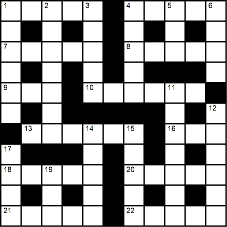In this puzzle, some of the Across entries are too long for their spaces in the grid. Remove a letter from them before entering them in the grid. This will always leave a new word.
Across Clues
Down Clues
Cryptic crosswords are a crossword puzzle where every clue is its own puzzle. The first thing you should know is that everything that is said below is assuming that you are solving an American cryptic crossword. If the puzzle implies that it’s a British cryptic, :run. Just run.
Every clue in a cryptic crossword will have two parts – the definition and the wordplay. The definition is a word or phrase that could be used to clue the meaning of the word in some way, but often isn’t a straightforward definition of the word. The wordplay is (usually) a way of constructing the word via its letters. Examples of this are provided in the types of wordplay down below.
There are eight main types of wordplay that you will see in a cryptic crossword: :anagram, :charade, :containers, :deletions, :double definition, :homophone, :hidden word, and :reversal. In addition, these can be :combined, can use :cryptic abbreviations, may be :&lit, should have a good :surface reading, and may have :connector words.
One side effect of cryptic clues is that all of the letters are checked. This means that every letter is clued twice – both by a definition and a wordplay. This means that unlike a standard crossword, a cryptic crossword can and will have unchecked letters in the grid (aka not every letter is used in both an across clue and a down clue). In fact, in a standard block cryptic, generally half of the letters are checked in the grid and half of them are not.
But of course, this is the Mystery Hunt and standard cryptics aren’t enough. After all, we still need to get a word or answer out of this somehow. Generally the kinds of cryptics you will see in the Hunt are variety cryptics. Variety cryptics are like standard cryptics, but shenanigans happen. Sometimes you need to transform the clue in some way before solving it, sometimes you need to transform the answer to each clue before entering it into the grid, and sometimes the grid is super weird and hard to enter stuff into. In traditional variety cryptics, you are given a set of instructions on what transformations you need to do, but since this is the Mystery Hunt, sometimes those instructions get… left off.
Cryptics are very complicated, and they take a while to get a hold of, but at least now you should be able to recognize them when they show up and have a chance at interpreting them.
So how do we actually go about solving variety cryptics? First, take a look at the instructions :if there are any. Right now, you’re particularly looking for any transformations that you know are going to be affecting the clues.
Once you have those in the back of your mind, go down the list of clues, writing down the answers to clues that you’re definitely sure of. If you solve one, it looks like it goes in the grid, and there’s nothing stopping it from the instructions from going in, put it in! Otherwise, write the answer next to the clue – you’ll come back to these. If there are clues that you know are for sure avoided by the instructions, start with those. They will help give you a solid basis for the rest of the shenanigans.
Once you’ve made your first pass and put the entries that you can into the grid, now you’re going back over the rest of the clues. At this point, you may not be 100% sure of what you’re entering, but you’re looking for reasonable guesses. You can get these from what’s been filled into the grid already, either the definition or the wordplay, knowing how the instructions work, or from figuring out the extraction early and backsolving the cryptic. When you have your guess, you can try to backsolve how the clue works – something that is generally easier to do than forward solving it. Do not feel bad about doing this – this is how a lot of cryptic clues are solved!
From there, you’ll need to get an answer, which can be anything from a simple process to a complicated endeavor. There is a lot of possibilities here, so it’s hard to give any specific advice, although I would say to focus on the pieces of information gained from the instructions to look for your answer – they weren’t put in for no reason.
Maybe a little more explanation here is needed. Unlike pretty much everything else that has a British type and an American type, American cryptics are much stricter on the rules than British cryptics. British cryptics have been known to play a little loose with these rules and use words that are _much_ more obscure, meaning that they are very hard to dig into.
And then there’s Australian cryptics, where they might not have both parts and instead just have a pun where the answer is the word.
I mean, look, it’s worth mentioning because it’s happened in the past, but in general, this is an American event and the vast majority of the cryptics will be American-style.
Anagram clues involve taking a set of letters and rearranging them to form a new word. An anagram clue will always contain an indicator word that you need to anagram, although there are a lot of possible indicator words for anagram clues. Anything that implies mixing up, rearranging, being crazy, being put in a different place, or anything vaguely around that could be an anagram clue. Take the following clue:
In this clue, the word “weird” is our anagram indicator. (I find weird to be the weirdest anagram indicator by far, which is why I’m introducing it here.) This means that we :have to anagram either “top” or “thirst” to get the answer. Given that we know that the clue is 6 letters long, this means that we’re anagramming “thirst” into a word that means “top”. This turns out to be T-SHIRT.
Here are two lists of anagram indicators. As you can see, there is a lot of variety in anagram indicators.
It’s worth mentioning that there’s a third possibility here technically, but it’s bad and American cryptics don’t do it. It’s called an “indirect anagram”. These are anagrams where you don’t anagram the words or phrases in the clue, but something in the clue is supposed to clue the phrase that you are supposed to anagram. In our example, this would mean that “thirst” would be cluing a different word that would anagram to a word meaning “top”. This will never happen in an American cryptic.
Charade clues are clues that involve putting two or more words together in order to form a bigger word (much like you would do with a hard word to act in the game Charades). These can, but do not have to, have an indicator. Take the following clue:
:This is a particularly mean clue, but it is a charades clue. “Add extra” means PAD, and “about” can be used to clue RE, and when you put them together, you get PADRE, which means father in the priest sense.
If a charade clue does have an indicator, it will be something that means “attach” or “come before/after”. A charades clue might have an indicator either because the pieces are out of order or because it would make the surface reading of the clue better.
Charade clues often make heavy use of :cryptic abbreviations, and are very often used :in combination with other types of clues.
Why is this mean? "About" is often used as a container indicator, so to an experienced cryptic solver, their first instinct might be to think that this is a container clue where a word meaning "father" is put inside a word meaning "extra" to get a word meaning "add". That being said, it's not like this is going to fool people completely, but it's a nice little trap for experienced solvers.
Container clues require you to put words inside of other words. They will always have an indicator that indicates one thing going inside of another. These indicators are generally directional, implying which word is being inserted into the other word based on how the clue parses. Take the following clue:
“Dividing” is our container indicator here. It says that a word meaning “behold” is being put in the middle of a word meaning “impact”. (Think of dividing not as in the mathematical operation, but as standing in the middle, splitting something in two.) The word meaning “behold” is LO, the word meaning impact is “SLAM”, and when you put one in the other you get SLALOM, which is a skiing race. (The “of” is a :connector word.)
Here are two lists of container indicators.
Containers are often used :in combination with other types of clues.
Deletion clues require you to remove letters from a word to make the answer. There will be some sort of indicator in the clue that means “not whole”, whether that is something that has already happened or something that you need to do. Take the following clue:
“Unfinished” is our deletion indicator here. Something is “unfinished” if it’s missing its end, so we need to take the last letter off of “hemp” to get HEM.
Deletion indicators often tell you which letter you need to remove, although sometimes you need to get creative with how you interpret them. Here are two lists of deletion indicators.
Deletions are often used :in combination with other types of clues.
Double definition clues are the exception to “each clue will have a wordplay and a definition.” Like the name implies, these clues have two different definitions. These types of clues will not have any indicators and can therefore be very short. Take the following clue:
This is a clue for FED. FED can be used to refer to a federal agent, and it is also the past tense for FEED, which is what you do when you load paper into a copier.
The two clues of a double definition must be a coincidence and not etymologically related in any way. The clue “Gave baby food, loaded paper” would not be a good double definition since both meanings of FED are related to each other. The FEED from loading paper comes from the FEED to give someone else food.
Hidden word clues are easy – the word is hidden in the clue somewhere! The trick is finding it. Hidden word clues will always have indicators, but they will vary greatly based on which kind of hidden word they are.
The most common kind of hidden word is a consecutive substring of one or more words in the clue. Often these words can be over word breaks. These clues will have an indicator that means that one thing is inside the other or that you’re taking a piece of something. Take the following clue:
:“In” is the indicator for the hidden word. The answer, HASTE, can be found across “cha-cHA STEps” and it means “briskness.”
Another type of hidden word is one where you take the same letters from a series of words. The indicator in this case should tell you which letters to take. Take the following clue:
“Primarily and secondarily” is the indicator for the hidden word. The answer, YOLO, can be found by taking the first two letters of “Young” and “love”, and can be clued by “a new way of saying ‘carpe diem’.”
The last type of hidden word is one where you take alternating letters from a word or phrase to make a new word. The indicator here should be pretty clear about removing or only reading every other letter.
“Ignores odd” is the indicator for the hidden word. The answer, TOE, can be found by removing the odd letters from “Stooge,” and is a word that can be clued by “digit.”
The consecutive substring hidden word is not often paired with other types, but the other two can be used in combination with other clues.
Here are two lists of hidden word indicators.
It certainly feels like “in” should be a :container indicator, right? While I wouldn’t put it past someone to use it as a container indicator, I wouldn’t use it by itself for that. A container indicator should have some sense of action. “Put X in Y” is a great way of indicating a container, but just “X in Y” doesn’t really bring the same sense of action. In general, when you see the word “in” without another word modifying it, I would think of hidden words more than containers.
Homophone clues clue a word that sounds exactly the same as the word that is being clued. There will always be an indicator word meaning something like “heard” or “said” or “out loud”. Note that in American cryptics, this will always use American pronunciation over other countries’ pronunciation, but regional variations in American pronunciation may be used. Take the following clue:
:This is a slightly mean clue, but this is a homophone clue. “Vociferously”, a word meaning “in a loud and forceful manner”, is our homophone indicator here. “The Sun God” in this case is Ra, and the homophone of it that means “cheer” is RAH.
Here are two lists of homophone indicators.
This is a mean clue because "Cheer" is also a homophone indicator. If you don't know what "vociferously" means, you may first be trying to find a homophone of "The Sun God" that means "vociferously".
Reversal clues flip a clue around, getting meaning out of it being backwards. A reversal clue will always have an indicator to say so. These indicators may clue going backwards in some way, or may take advantage of which way they are being written in the grid, such as “go west” for across clues or “go up” for down clues. Take the following clue:
Since this was a down clue in the crossword I pulled this from, our reversal indicator is “Rising”. This means that we are looking for a Disney fish that when spelled backwards means “a bad sign”, and it’s 4 letters long. (“is” is the :connector) This gives OMEN (NEMO backwards).
Note that the answer has to be OMEN and not NEMO because the “rising” is attached to the “Disney fish”. It is possible to write reversal clues ambiguously such as “Disney fish rising? A bad sign.” There the “rising” may apply to “Disney fish” or “a bad sign” and it’s not clear which you would enter into the grid. (:Remember, that ? is irrelevant.) Good cryptic authors will not do this.
Here are two lists of reversal indicators.
Reversals are often used :in combination with other types of clues.
These clue types don’t have to be used on their own – in fact you can do all sorts of fun wordplay by combining them. All of the appropriate indicators must be there, but you can often get some fun new indicators by combining them. Take the following clue:
Our indicator here is “takes back”. The “takes” part indicates that we are putting “vow” inside of “enemy” like a :container clue, but the “back” part indicates that we need to :reverse the “vow” before putting it in. In this case, the “enemy” is a FOE and the “vow” is I DO, and if you flip that around and put it in FOE, you get FOODIE, which can be clued by “eating lover”. (The “of” is a :connector word.)
In an American cryptic, every word in the clue must be used in the definition or the wordplay. The one exception to this is the connector word. This word is used as a connection between the two parts of the clue. While it doesn’t have any meaning in the clue, it helps the surface reading be cleaner. Not every clue has a connector word, and in fact many clues will not.
Here is a list of possible connector words.
Oftentimes, cryptic clues will use words to clue a single letter or a group of letters. These conversions come about because those letters are abbreviations for that word in some way. Take the following clue:
This clue is explained in the &lit section, but part of the parsing requires the word “spade” to be read as just an S. This is a cryptic abbreviation. The word “spade” is abbreviated to S in the game of bridge (among other games), so we can use it to represent S in cryptic clues. Note that it’s not just enough that “spade” starts with S, but that it is actually abbreviated by S somewhere.
Of course, that’s a fairly obvious abbreviation. There are a lot more that aren’t just the first letter. “Knight” can be used to represent N (chess), “soft” can be used to represent P (music), and “nurse” can be used to represent RN. Of particular note is the number 1,000, which can be used to represent M (Roman numerals), K (kilo), or G (grand).
Here is a list of cryptic abbreviations, although there are lots of other lists throughout the internet.
For the most part, punctuation in cryptics is there to help the clue sound like a reasonable sentence or phrase and is irrelevant to the actual working of the clue. You can remove any punctuation from your consideration with three main exceptions:
If there is a ? at the end of the clue, then the clue is doing something funky and doesn’t follow the standard rules to a T. This may be cluing the definition in a weird way, some very unusual wordplay, or just some other shenanigans.
If there is a ! at the end of the clue, then the clue is &lit. This stands for "and literally!" For these clues, the wordplay and the definition are the same thing. Take the following clue:
This entire clue is both the wordplay and the definition. On the wordplay side, this is a :container clue, with HOE wrapped around S. (Spade is a :cryptic abbreviation for S.) On the definition side, a HOSE is a garden implement that you could wrap around something.
Note that both of the above only apply to !’s and ?’s at the end of the clue. If they are in the middle of a clue, then you can just ignore it.
The other noteworthy piece of punctuation is the ‘s. This can either mean that the clue can be read with “’s” there, with “s” there, or with nothing there. For some reason, the apostrophe can also cause the “s” to be removed. I don’t know why, but it’s super handy when writing. Take the following clue:
“Nude” is a good :deletion indicator – it says to take a word and remove its clothes (aka the letters outside it). Normally you would take the W and the S off of “Wendy’s”, but the apostrophe there means that you can ignore the “s” when interpreting the clue, allowing us to take the W and the Y off of “Wendy” to get END.
Every cryptic clue should have a surface reading that makes sense. This means that you can imagine a situation in which someone would say this sentence. It may be a very weird situation, but a situation nonetheless. This surface reading may have nothing to do with the clue whatsoever and in fact may be constructed to confuse you.
For example, “Rising Disney fish is a bad sign” would make sense if someone saw a dead Nemo. “Enemy takes back vow of eating lover” is a cannibal reneging on their promise to eat their spouse. The dead Nemo is a hint towards how the clue works, but the cannibal clue is implying that they’re eating the wrong thing.
As much as I joked earlier about Mystery Hunt Cryptics not giving any instructions – sometimes they do. Variety cryptics are hard enough already.
Focus on the “for all audiences” part of this clue. What could it be cluing?
“Cut” “for all audiences”
Yes
GRATED can be clued by “cut”, and G-RATED can be clued by “for all audiences”.
Think about some famous tragic kings with short names. Also, what could “Poles” mean in this context? While the surface reading of Poles means Polish people, that’s not how the clue is actually using it.
“Discovers” “tragic king with pair of Poles”
:Charades, :Cryptic Abbreviation
Yes
The tragic king is LEAR, and the pair of Poles is NS. LEARNS can be clued by “discovers”.
Keep in mind that Poles is referencing geographic poles, and not Polish people, so the NS comes from the North and South poles.
“Extravagant” can mean absurd, which makes it an unusual but valid indicator for a certain type of wordplay.
“Dream” of “extravagant praise”
Yes
“Extravagant” is an anagram indicator. ASPIRE is an anagram of “praise” that can be clued by “dream”.
“Sole” is being used one way in the surface reading and a different way in the actual reading of the clue.
“Piece of missing leather” “sole”
Yes
“Piece of” is a hidden word indicator. The word SINGLE can be found in “misSING LEather” and can be clued by “sole”.
Every entry in the grid is a valid word, which means that this hyphenated phrase must break down into two three letter words. It is likely to be (three letter word)-(three letter word).
“Uninterrupted” and “at once in pieces”
No
“In pieces” is an anagram indicator. ONE-ACT is an anagram of “at once” that can be clued by “uninterrupted”. (A one-act play is one that is uninterrupted by act changes or intermissions.)
The “various kinds” side of the clue is more likely to give you a way into the clue. With a combination of crossing letters and looking up synonyms online, you should be able to get the other half.
“Way to desiccate prunes” of “various kinds”
No
SUNDRY can be clued by “various kinds”, and SUN DRY is a way to desiccate prunes.
Look up what the cryptic abbreviation for “key” is.
“Third-party account’s” “key line”
:Charade, :Cryptic Abbreviation
No
One of the keys on a keyboard is the escape key, abbreviated ESC, and a line can be called a ROW. ESCROW can be clued by “third-party account”.
Two notes: Keep in mind that the “‘s” is not used. See the note about punctuation. ESC is a common cryptic abbreviation for “key” – it’s good to keep in mind for the future.
What can “partly” be an indicator for?
“Ease” “moments of tension, partly”
Yes
“Partly” is a hidden word indicator. The word SOFTEN can be found in “momentS OF TENsion” and can be clued by “ease”.
To start, focus on different words that could fit “baseball glove feature”.
“Baseball glove feature” “takes pressure away from setting”
:Deletion, :Cryptic Abbreviation
Yes
P is a cryptic abbreviation for “pressure”, and another word meaning “setting” is PLACING. Taking the P away from PLACING leaves LACING, which is a “baseball glove feature”.
Go look up Sacha Baron Cohen characters. It should be very clear which one to use with some crossing letters.
“Come down from” “height in pursuit of Sacha Baron Cohen character”
:Charade, :Cryptic Abbreviation
Yes
The “Sacha Baron Cohen character” is ALI G, and height can be abbreviated as HT. Putting those together, you get ALIGHT, which can be clued as “Come down from”.
Look up other words for “urge”.
“Entreated to get” “urge in bed”
Yes
“Urge” can clue EGG (as in to egg someone on). This can be placed in “bed” to get BEGGED, which can be clued by “entreated to get”.
Look up a list of D.C. suburbs.
“Lie atop” “D.C. suburb”
RESTON is a “D.C. suburb”, and REST ON can be clued by “lie atop.”
This uses an uncommon word meaning “brief moment”, so it’s better to look up various different muscles and seeing if that inspires any wordplay.
“Muscle” and “one more thing after brief moment”
“One more thing” can be represented with PS (like what you would stick at the end of a letter after signing off), and “brief moment” is a way of cluing TRICE. Putting those together, you get TRICEPS, which is a “muscle”.
Look up the cryptic abbreviation for “uniform”. Also look up synonyms for “coercion”.
“Put on clothes” from “uniform out of coercion”
:Deletion, :Cryptic Abbreviation
“Uniform” can be abbreviated by U. (Uniform represents U in the NATO phonetic alphabet.) The word DURESS means “coercion”, and if you take a U out of it, you get DRESS, which can be clued by “put on clothes.”
This is a pretty well-known wordplay revolving around a specific water brand.
“Ingenuous to come up” for “water brand”
“To come up” is a reversal indicator because this is a down clue. “Ingenuous” is a word that can clue NAIVE. When you reverse that word, you get EVIAN, a “water brand.”
(Note that even though the reversal indicator is in between the two words, grammatically the word order means that “to come up” is applying to the first thing, and the “for” connector word helps separate the definition away from the reversal indicator.)
While this solves to a 6 letter word, the fact that it is split between two different entries means that it can split into two 3 letter words. Also, what can “losing heads” mean in this case? Why is it plural?
“Bummer: deer losing heads” are “disorganized”
A “bummer” is a DRAG, a deer is a STAG, and if you take those two words, “lose” their “heads” (remove the first letters), and combine them, you get RAGTAG, a word that can be clued by “disorganized”.
(Note that this can be split up over two entries because each of the entries individually is also a word.)
Look up baseball teams.
“Stalk” “baseball team from the bottom up”
“From the bottom up” is a reversal indicator because this is a down clue. The “baseball team” this is looking for is the METS, and when you reverse it, you get STEM, as in the “stalk” of a plant.
The wordplay/definition split is in a weird place. Also look up the cryptic abbreviation for “concerning”.
“Concerning promotion in Introduction to German” “Literature”
:Charade, :Cryptic Abbreviation
“Concerning” is RE (like in a memo or email), “promotion” is an AD, “in” is just IN, and “Introduction to German” means take the first letter of “German”, so G. Put them together, and you get READING, which can be clued by “literature.”
How do we normally write “saint” when we put it front of a person’s name?
“Saint got old” and “fake”
“Saint” can be abbreviated by ST, and “got old” is a clue for AGED. Put them together, and you get STAGED, which can be clued by “fake.”
If you understand what “initially” means in this clue, you’ll crack it.
“Charge” “Reddit users needless additional taxes, initially”
“Initially” is an indicator to take the first letter of the other words, and the first letters of “Reddit users needless additional taxes” is RUN AT, which can be clued by “charge.”
This is really mean, because there is three different possible homophone indicators in this clue. There only needs to be one, so what could the other ones be doing?
“Cry out loud” and “blubber: Source!”
“Out loud” is a homophone indicator. A word meaning “cry” is WAIL, and a homophone of WAIL is WHALE, which is a “blubber source.”
This will become clearer once you get 21 Across. That crossing letter should give you a bit of an idea as to what is going on with this one.
“Stadium” “blowout?”
:Anagram (but consider the :?)
In this case “blowout” is supposed to be an anagram of “blow” to get BOWL, which can be clued by “stadium.” “Out” as an anagram indicator would be a little weird, but as part of “blowout” it’s passable for a ? clue.
:How the heck do I get started?
:How do I deal with the Across clues?
:I'm hopelessly stuck. Get me off the current part that I'm on.
Start with the Down clues. Those don’t have any shenanigans mentioned in the instruction, which means that if you solve a clue, you can just put it straight in the grid.
Some of the clues are going to be easier than others. Get the low-hanging fruit first so that you can some handholds into the grid. Some clues to look at include 4 Down, 6 Down, 12 Down, and 14 Down.
When trying to solve the clues, you need to mentally consider that the answer word could be the number of spaces in the grid or one more. This means that 1 Across could be 5 or 6 letters long, and you should account for that in your thinking.
When placing an Across entry in the grid, keep in mind that the instructions stated that what will be entered into the grid will still be words. This means that you can try dropping different letters and see what makes words. If there is more than one letter than can be dropped, the crossings from the Down clues should help clarify which letter needs to be dropped.
Also consider why the puzzle has the title “Headscratchers.”
Well, the puzzle had Across clues that you had to remove letters from before putting them in the grid…
:Step 1: Figure out as many clues as possible
Each clue has an explanation which already tells you how each clue works, so you can click on that to tell you the answer to that clue.
8 of the Across clues need to have their first letter removed before putting it in the grid. This is why it’s called “Headscratchers”, because you scratch off the head before entering.
Take the letters that are removed from each of the Across entries and read them in the clue order. This spells GLASS LAB.
Design Studio: How to Design
Electrical, Optical, and Magnetic Properties of Materials
Energy Engineering Projects Laboratory
Mechanics and Materials II
Organic Chemistry II
Principles of Macroeconomics
Quantum Physics I
Startup Sustainable Tech
Systems Neuroscience Core I
Identify, Sort, Index, Solve is a puzzle framework that has been a staple of puzzle hunting since the early 2000s. The nice thing about it is that it is such a flexible structure, it can be molded to fit all sorts of puzzles. In particular, if you have any reasonably interesting bit of trivia or cool aha that you want to make work, it is not too hard to use ISIS to turn it into a puzzle.
The term ISIS was coined in 2010 by Foggy Brume (a member of Palindrome). The issue was that even then, ISIS was being played out a little, and you can see that in the puzzles themselves. The puzzles have gotten more complex over the years, and pure ISIS puzzles have gone down in frequency, but they haven’t gone away. There are a number of reasons why an ISIS puzzle might show up in the Hunt:
The point behind sharing this is that ISIS is now under the assumption of “easy” for the MIT Mystery Hunt, so it’s important to know if you’re going into it for the first time. Here are the steps:
Indexing is a process of taking the Nth letter out of a word or phrase. For example, if you had the phrase “THE MIT MYSTERY HUNT ✅” and you wanted to index 4 into it, you would take the 4th letter, which is M. Note that indexing generally ignores spaces and non-alphabetic characters, unless it would make sense for the context that you’re in. (Note that it generally takes into account alphabetic characters from other languages, so a Ñ would count as a letter if it showed up.)
Some puzzles will spell out the answer directly, but there’s three other common things that might happen at the end of a puzzle.
First, a puzzle might say something like “ANSWER IS…” or “THE SOLUTION IS…” or just “ANSWER…”. Sometimes the puzzle writer just needs the puzzle to be longer and this is the easiest way of doing that. In addition, this might be used if the answer could be interpreted as a clue phrase and therefore needs to be clarified that this is _the_ answer.
Second, a puzzle might have a cluephrase for the answer, like “THE FIRST US PRESIDENT” to clue “WASHINGTON”. This can be done to make the puzzle longer or to make the puzzle easier to get with a smaller percentage of identifications.
Lastly, a puzzle might ask you to do recursion. This means that you might get one more clue that you need to do like the clues you did earlier in the puzzle. For example, in a puzzle where you had to insert an R into every clued word, if you got the answer phrase “SOMEONE WHO STARES AT STARS FIVE”, then the answer wouldn’t be “GAZER” but “GRAZER”. (Note that the “FIVE” in this case is an :enumeration.)
Note that in past Mystery Hunts, these intermediate steps could not be checked. If you put them in the answer checker, the response you would get back would be just "Wrong". The 2022 Hunt was different in that it would check those intermediate phrases, so we'll see if this becomes a trend or not.
:Also, because I can't help it, this is an example of recursion.
:Also, because I can't help it, this is an example of recursion.
:Also, because I can't help it, this is an example of recursion.
:Also, because I can't help it, this is an example of recursion.
:Also, because I can't help it, this is an example of recursion.
:Also, because I can't help it, this is an example of recursion.
:Also, because I can't help it, this is an example of recursion.
:Also, because I can't help it, this is an example of recursion.
:Also, because I can't help it, this is an example of recursion.
:Also, because I can't help it, this is an example of recursion.
Huh. I didn't expect anyone to get this far.
I guess, if you want a hint, you can click :here.
Enumeration means how long the word or phrase is. It is often but not always written in parenthesis as such: “(6)”. If there are multiple words in the phrase, then there will be a space between the words, like “(2 5)”.
For example, the phrase “THE MIT MYSTERY HUNT ✅” has the enumeration (3 3 7 4 1). In general, numbers and nonalphabetic characters are counted as individual characters for coming up with enumerations, while spaces and punctuation are either not counted or included in the enumeration. For example, “GILLIGAN’S ISLAND” would either have the enumeration (8’1 6) or (15).
:How the heck do I get started?
:I'm having trouble identifying these.
:I've found them, now what do I do?
:I have the additional information for each item, now what do I do?
:I've figured out how to sort, but I don't have any indices.
:I'm hopelessly stuck. Get me off the current part that I'm on.
The first part of ISIS is Identify, so the first thing you should attempt to do is to figure out what each of these things are.
(This is not saying that you need to do ISIS strictly in order, but generally Identify is a good place to start.)
These should sound like things that you are familiar with as MIT Students. Maybe something you were thinking about with respect to the Spring?
The puzzle leaves off something that would’ve made this process much easier. If that was left off, then it’s probably important to the puzzle.
At this point, we need to consider both the Sort and the Index. Ideally we’d like to find a good sort order and a good set of numbers to :index into these with. A good sort order will not duplicate anything in the order. A good set of indices will not contain any number that is longer than the name of the class that it is associated with.
Well, when you used the class numbers to sort, you didn’t need the part after the decimal point to resolve any sorting issues. Perhaps each class number should be treated as two different numbers.
:Step 1: Identify the items in the puzzle
:Step 2: Get additional information
:Step 3: Figure out the sort order
Each of these items is a class in MIT’s Spring 2023 semester.
There are two ways to figure this out. The first is to just put some into Google and see what happens. The second is to guess that they sound like classes and then go looking up the course catalog for MIT. (It is true that they could be classes for some other university, but whenever something university specific comes up in the Hunt, it’s a good idea to check to see if it is an MIT specific reference or not.
The additional piece of information you need is the class number for each of the courses.
| Class | Number |
|---|---|
| Design Studio: How to Design | 4.021 |
| Electrical, Optical, and Magnetic Properties of Materials | 3.23 |
| Energy Engineering Projects Laboratory | 10.27 |
| Mechanics and Materials II | 2.002 |
| Organic Chemistry II | 5.13 |
| Principles of Macroeconomics | 14.02 |
| Quantum Physics I | 8.04 |
| Startup Sustainable Tech | 1.004 |
| Systems Neuroscience Core I | 9.011 |
There is lots of information that you could grab, but the class number stands out because it would’ve made searching for these a lot easier.
Be careful here about :spreadsheet-dumping.
Oftentimes in ISIS puzzles, it’s easy to copy down lots of extraneous information. I wouldn’t be surprised for this ISIS puzzle if professor name, day and time, or course description were columns in a spreadsheet someone made for this puzzle. It’s a tricky balance. If you copy down too much information, the important stuff can get lost in the weeds. If you copy down too little information, you may not have the important stuff in your sheet.
Some of this is all about developing instincts for what might or might not be important, but there is something that you can do to help combat this. If you are working in a group spreadsheet, make a copy of the sheet with all the data, then get the data you think might be important and add that to your copy. If it turns out to be important to the puzzle, then you can add it to the main table. If not, then it’s easy to file that sheet away and go back to the main sheet. Your sheet will be still be there if it turns out to be relevant.
Every class has a unique number, so you can use this to sort the classes.
| Class | Number |
|---|---|
| Startup Sustainable Tech | 1.004 |
| Mechanics and Materials II | 2.002 |
| Electrical, Optical, and Magnetic Properties of Materials | 3.23 |
| Design Studio: How to Design | 4.021 |
| Organic Chemistry II | 5.13 |
| Quantum Physics I | 8.04 |
| Systems Neuroscience Core I | 9.011 |
| Energy Engineering Projects Laboratory | 10.27 |
| Principles of Macroeconomics | 14.02 |
For finding sort orders, it’s worth it to see if there is a natural sort order to the items. (Pokémon would sort by national dex number, elements would sort by periodic table, etc.) If not, then you’re looking for something with will unambiguously sort the items you have (aka no duplicates in any of the data). The course numbers, being unique numbers, provide a nice sort ordering.
Use the number after the decimal point as an index into the class name.
| Class | Number | Index | Answer |
|---|---|---|---|
| Startup Sustainable Tech | 1.004 | 4 | R |
| Mechanics and Materials II | 2.002 | 2 | E |
| Electrical, Optical, and Magnetic Properties of Materials | 3.23 | 23 | G |
| Design Studio: How to Design | 4.021 | 21 | I |
| Organic Chemistry II | 5.13 | 13 | S |
| Quantum Physics I | 8.04 | 4 | T |
| Systems Neuroscience Core I | 9.011 | 11 | R |
| Energy Engineering Projects Laboratory | 10.27 | 27 | A |
| Principles of Macroeconomics | 14.02 | 2 | R |
The important revelation here is that to sort the classes, you didn’t need the class numbers, just the course numbers. This means that we haven’t figured out the :constraint on the class numbers themselves, so they are still available for indices.
The idea of how “constrained” something is can be very helpful when solving puzzles. Constraints are restrictions that the puzzle author had when choosing items to put in their puzzle. A good puzzle is constrained enough to be interesting, but not constrained so much that the puzzle is impossible to write.
While solving, it can be useful to think about what constraints you know about so far. If the puzzle seems wide open, then you’re probably missing a constraint or two. If the puzzle seems overly constrained, maybe one of the constraints you’re thinking of is wrong and you need to broaden your scope.
Note that an overly constrained puzzle could be an author showing off their writing ability, especially if it’s a gridded puzzle. In addition, if some of the clues seem to be generating words that are very odd, then the puzzle author probably had some hard constraint and they needed the odd words to make the puzzle work.
Location puzzles are part of what makes the Mystery Hunt feel very much like MIT. They get you to look at MIT’s campus in a new way, from an answer hidden on a particular poster on an out-of-the-way bulletin board, to a runaround taking you to visit various interesting sites all over campus. They’re puzzles that can’t be done in any other puzzle hunt, and they bring the campus to life. Even the pandemic hunts had some remote location puzzles (:well, one more than the other).
Lots of times, location puzzles will be clearly marked, but they do not have to be. Oftentimes, if you are stuck on a puzzle, it can be helpful to think of various places on campus that could fit with the data in the puzzle. Looking back at previous puzzles can be helpful to see what gets used often.
This puzzle will use the geometry of MIT in a very specific way. You won’t have to go that far from this room to get the information that you need.
The 2021 Hunt involved an MMO of people walking around a virtual MIT campus. Anything that the 2022 Hunt did was going to be less tied to MIT than that.
Although TBH, I was hoping to just walk around campus for a bit, looking for cool things to base a puzzle around or use in a runaround. Maybe if I get the privilege of writing again, I’ll get to do that.
Rules for :Heyawake, :Slitherlink, :Equal Sum Line Sudoku, and :Yajilin.
When many people think of the term “logic puzzle”, they often think of zebra puzzles. Now, these show up in Mystery Hunts, but there will also be Nikoli-style gridded logic puzzles.
There are lots of different types of these puzzles, and there all sorts of places that will give you plenty of these puzzles to practice. One famous source is Grandmaster Puzzles, run by Thomas Snyder. The blog posts a wonderfully handcrafted puzzle every weekday. There are all sorts of puzzle types there, and they will wonderfully break your brain.
But keep in mind that a Mystery Hunt puzzle is unlikely to just give you one of those puzzles with nothing else. First of all, you need to get a word or phrase as the answer, and second of all, people like writing computer solvers for these puzzles, so what might be a really hard logic puzzle could be made trivial by some code. This means that you are likely going to see these logic puzzles under different circumstances. Maybe the logic puzzle is otherwise disguised as something else. Maybe the logic puzzle is also a metapuzzle, and you’re trying to crack as much as you can without solving more puzzles. Or maybe the puzzle writer wrote a brand new variant on that type of puzzle that everyone is solving for the first time. It’s best not to be a real expert at any one type, but practice general deductions that will help you with all sorts of puzzles.
If you get a grid and it doesn’t tell you what kind of puzzle it is, the second half of /dev/joe’s page will help :you.
Fun fact: I discovered this resource while writing this. This is cool! Thanks /dev/joe!
In this puzzle, you will be shading some squares such that the following restrictions are followed:
In this puzzle, you will draw a single, non-intersecting loop along the edges of the grid cells such that each cell with a number has that many of its edges on the loop. The loop can only take 90 degree turns.
First, this has normal sudoku rules. (Every row, column, and thick-bordered box must contain the numbers 1-6.)
In addition, along a blue line, the digits in each box must sum to the same total. (For example, r1c2 + r2c3 = r3c2 + r3c3.)
Shade some cells and then draw a non-intersecting loop through all remaining unshaded cells in the grid such that the following restrictions are followed:
These walkthroughs will take you step by step through each of the puzzles. All of the actual steps are behind expandable links, so you can only reveal up to the part you're on, and the titles should give you an idea of the general solving path.
:Equal Sum Line Sudoku Walkthrough
:I’ve solved all four puzzles, now what do I do?
:How do I turn that into an answer?
:I can’t get 3 to look right.
:I'm hopelessly stuck. Get me off the current part that I'm on.
:Step 1 – the 0 region and the 3 region
:Step 2 – the northern 1 region
:Step 3 – the bottom right region
:Step 4 – the other 1 region
:Step 6 – the rest of the grid
The region marked with 0 cannot have any black squares, so they must all be unshaded (marked as green).
The region marked with 3 can only has 5 spaces, so the three black squares have to be in those spaces. We can then mark all of the squares adjacent to the black squares as unshaded.
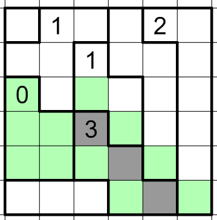The space marked A must be shaded because otherwise there would be an unbroken line of unshaded squares that spans more than 2 regions. This means that the rest of the 1 region must be unshaded, which forces B and C to be shaded to break up the line of unshaded squares.
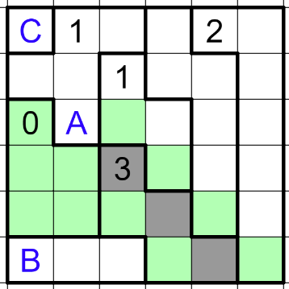The space marked A must be unshaded because it is next to a shaded square.
The space marked B must be unshaded because otherwise the unshaded space to its right would be cut off from the rest of the unshaded squares.
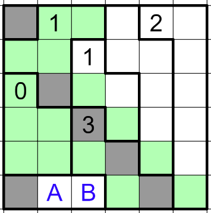The space marked A must be unshaded. If it was shaded, then the space with the 1 would have to be unshaded, and therefore the space marked B must be shaded to stop the line of unshaded squares from crossing 3 regions. This would make A and B be shaded, but they are adjacent to each other. Therefore the A must be unshaded, the space with the 1 must be shaded from the region requirement, and B must be unshaded due to adjacency.
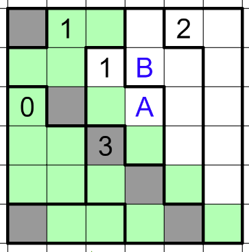The space marked A must be unshaded. If it was shaded, then the shaded squares would break the unshaded squares into two separate regions.
Since A is unshaded, the space marked as 2 must be shaded, and all of the adjacent spaces must be unshaded.
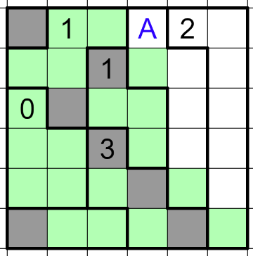The spaces marked A and F must be unshaded because otherwise they would isolate the corner squares from the grid.
One of B and C must be shaded because otherwise there would be a row of unshaded squares crossing three regions. Similar logic can be used to show that one of D and E must be shaded. Due to adjacency reasons, the group must be B and E or C and D. However, if it was C and D, then the bottom right unshaded squares would be cut off from the rest of the grid, so it must be B and E.
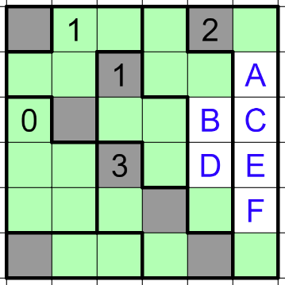:Step 1 – Mark the 0s and the nearby 3s.
:Step 2 – Resolve the bottom-right corner.
:Step 3 – Draw some segments on the 3 on the bottom right.
:Step 4 – Resolve the 1 on the bottom edge.
:Step 5 – Continue the loop on the left edge.
:Step 6 – Work on the interaction between the 3 and 1 on the left.
:Step 7 – Return to the bottom-right 3.
:Step 8 – Go back to the leftmost 3.
:Step 9 – Finish up on the right-hand side.
We can put Xs on all four sides of the 0 by definition of being a 0.
Both of the 0s share a corner with a 3. Take a look at the two sides of the 3 leading into that intersection. They can’t both be empty because a 3 can only have one empty side. However, as you can see in the image to the right, if one side is on the loop, then the other side must be because the loop doesn’t have any other exit from that intersection. Therefore, those corners must have both segments adjacent to the 3 filled in.
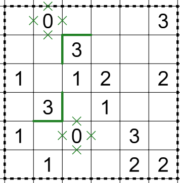Take a look at the 2 in the bottom right hand corner. There are only two ways to resolve that corner – either the top and left edges are on the loop or the bottom and right sides are on the loop. This is because if either the bottom or right sides are on the loop, the other must also be on the loop to get the loop out of the corner.
Take the case where the top and left edges of the 2 is on the loop. Now let’s look at the top-left corner of the 2. That intersection cannot have a line coming out of it from the top or to the left due to how loops work. However, they both border the same 3 square, and a 3 can only have one edge that isn’t on the loop. This means that this case doesn’t work, and the bottom and right of the bottom-right 2 must be on the loop.
Once we have that information, we can continue these segments one up/one to the left. This is because those segments can’t turn onto the 2, so they only have one direction to go.
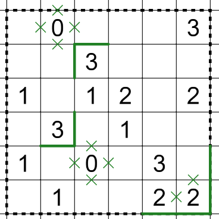There are four possibilities for how segments can be drawn around the 3. They are shown below.
The first and the last possibilities have an issue. They have a segment that ends in the bottom right that has nowhere to go. They can’t go the right or bottom because the 2 is used up, and they can’t go in the last direction because that would be the fourth segment around the 3. This means that it’s either the 2nd or 3rd possibility. We don’t know which it is, but they both have a segment on the right and under the 3, so we can add those in.
We have now used up the 2 on the left, so we can put an X on the remaining side. This means that the segment on the bottom must continue another square along the bottom.
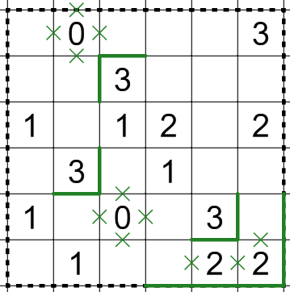Take a look at the 1 on the bottom edge. If it had a segment of the loop on the top edge, it runs into an issue. It can’t go up or to the right because those are blocked off by the 0, and it can’t go down because the 1 is already used up. We can use similar logic to cancel out being a segment on the right side.
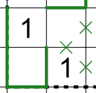But what about putting a segment on the left side of the 1? Let’s look at the bottom of that segment of the loop. The loop has to continue to the left because it can’t go to the right, and from there it needs to go up twice. If this happens, we get the situation in the image to the right.
At this point we have an issue with the other side of the segment on the 1 on the bottom. It can’t go up or to the left because the higher 1 is already used up. It can’t go to the right because the bottom 1 is already used up. We’ve run into a contradiction, which means there can’t be a segment on the left of the 1 on the bottom, which means that there needs to be a segment on the bottom of the 1.
This segment can be continued to both sides because the loop only has one way to go. On the right side, it connects up with the loop we already have. On the left side, it goes into the corner and continues around the corner.
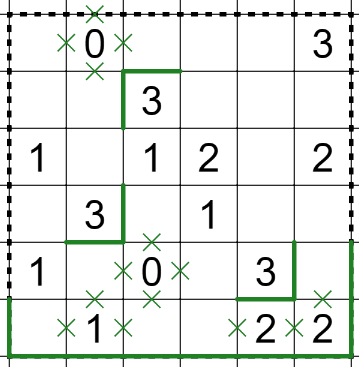Let’s continue the loop on the left edge. It can’t go to the right because then it has nowhere to go. (The 0 and the 1 are both used up at this point.) Therefore it must go up.
We can still continue this. The loop can’t go to the right because the 1 has already been used up. This means that the loop must go up again.
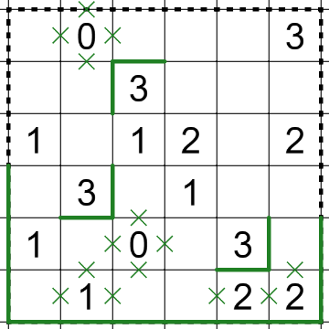We can put Xs on all the empty spaces on the 1 we just used up. Now the segment on the bottom of the 3 must go up, giving us the situation to the right.
Now look at that segment we just drew in. If it goes up, it uses up the 1, and now the segment on the left-edge on the grid has nowhere to go. This means that it needs to go to the left, connecting up with the segment on the left edge.

Let’s look at the segment underneath the 3. The left-hand side of that segment has to go up because if it goes to the left, it will be trapped. Continuing that segment, it once again has to go up because if it goes to the left, it will be trapped. Then we can put Xs on the spaces around the 1 we just used up.
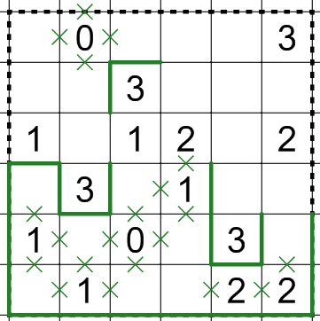The segment on the right of the 3 has to go up because it will get stuck if it goes to the right. This connects it to the 3 in the second row. This forces us to draw in the segment to the right of that 3.
At this point, we can put Xs around the 1 that we just used up, now the 2 next to it only has two open segments, so we can fill them in. This connects up our loop so that there’s only two open sections to our loop.
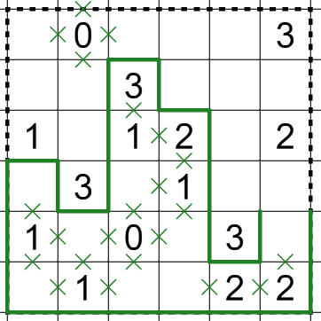Look at the segment on the right edge. If it goes over to the left, then the loop closes up, but the 3 in the upper-right hand corner won’t have any segments around it. Therefore, that segment must go up. The end of the loop to the left now has nowhere to go but up. This logic can be repeated twice until both ends of the loop reach the 3. This gives us the diagram to the right.
The edge to the right, once again must go up since it can’t close the loop yet. Then it rounds the corner to the top of the 3. At this point, the 3 needs one more segment to fill up, and the bottom cannot have a segment on the loop, which means the left must have one, closing up the loop, and finishing the puzzle.
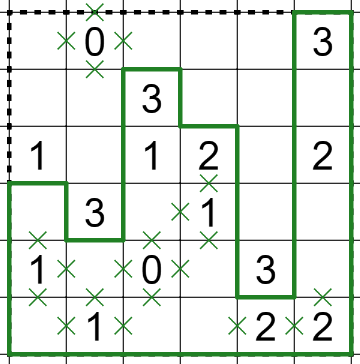:Step 1 – Place the first three 6s.
:Step 2 – Place the other three 6s.
:Step 3 – Fill in the possibilities for 4 & 5.
:Step 4 – Resolve the lower-right line.
:Step 5 – Resolve all the 4/5 and some of the 1/2/3 squares.
:Step 6 – Resolve the leftmost line.
:Step 7 – Finish off the 4s and the 5s.
:Step 8 – Resolve the Z-shaped line.
Note the three highlighted lines in the diagram to the right. These lines each have the property that they enter one cell in one region and three cells in a second region. (The line on the left does this with the top and bottom region.) The smallest sum of three numbers in one region in this sudoku is 1+2+3=6, which is the largest number in the sudoku. Therefore the single numbers can all be filled in with 6s, and in the other squares we can put a note that they must be 1, 2, or 3.
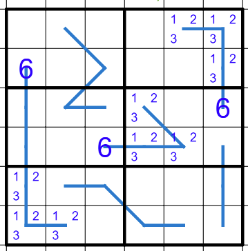The 3s in the other sections can be placed via sudoku logic.
In the upper right region, the 6 can’t be in the bottom two squares because of the 6 in the region to the left, and therefore the only open space is the one in the upper left.
In the bottom left region, the 6 can’t be in the rightmost column because of the 6 immediately above it, so it must be in the middle-up square.
In the bottom right region, the top row is knocked out by the region to the left, and the outside columns are knocked out by the regions above it, so the 6 must be in the middle-bottom square.
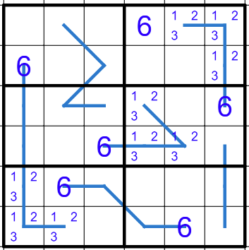In the upper right, middle right, and bottom left regions, we know the two remaining cells have to have 4 or 5 in some order, so let’s mark those. The picture to the right is what it looks like when we do that.
Now, take a look at the pink squares. They must be equal to each other because they’re on the same line and they both have a 6, so the pink square on the right must also have a 4 or 5.
Now, take a look at the orange squares. The columns they’re in already have two squares that must have a 4 or 5 them, which means the orange squares can’t have a 4 or 5, and they can’t have a 6 because we placed all of those, which means that they must have a 1, 2, or 3, so we can fill that in.
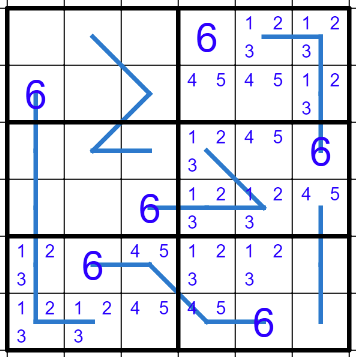Take a look at the two remaining open squares in the lower-right region. The top one is in a row with three squares that must have a 1, 2, or 3 in them, so this square must have a 4 or 5. The bottom one is in a row with two squares that must have a 4 or 5 in them, so this square must have a 1, 2, or 3. This results in the situation highlighted to the right.
Now, this line is the equivalent to the equation (4 or 5) = (4 or 5) + (1 or 2 or 3). The only way this equation works is 5 = 4 + 1, so we can fill those numbers in.
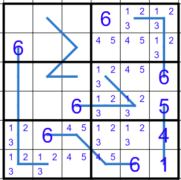Now that we placed a 4 and a 5, we can resolve all of the 4/5 squares. R6C4 must be a 5 because it contains a 4 in its region. R6C3 must be a 4 because of the 5 to its right. R5C3 must be a 5 because of the 4 we just placed. R3C5 must be a 4 because of the 5 in its region. R2C5 must be a 5 because of the 4 we just placed, and R2C4 must be a 4 because of the 5 we just placed.
The 1 also forces some deductions. We can remove the 1s from the two squares on the bottom of the bottom-left region, which means we can place a 1 in the third square. Similar logic can be used on the squares in the top-right region. We can then remove the 1 possibilities from R5C4, R5C5, R4C5.
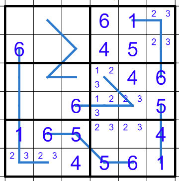In the middle region, we know that the line must add up to 6. The two possibilities are 1+5 and 2+4. It can’t be 1 and 5 because of the 1 immediately below it, so it must be 2 and 4. The 4 in the region to the right forces the 4 to be on the bottom square of the line, and forces the 2 to be above it.
This removes the 2 as a possibility from the bottom left, forcing that square to be a 3 and the square to the right to be a 2. We can also the 2 as a possibility from R3C4.
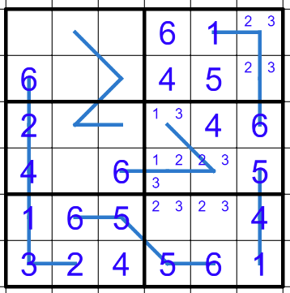The leftmost column has every square filled in but one, so we can put a 5 at the top of the column. The top-left region is missing a 4, and sudoku logic is forcing it to be in the top middle square of the region. The middle-left region is missing a 5, and sudoku logic is forcing it to be in the top middle square of the region.
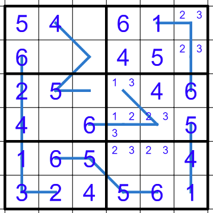The square next to the 5 on this line only has two possibilities from its row – 1 or 3. If this is a 3, then the sum in this region would be 8, but that would force a second 4 in the upper left region. Therefore, this square must be a 1, which forces the last square on the line to be a 2.
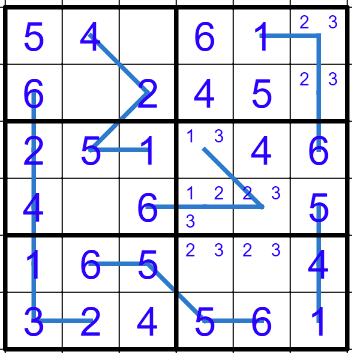The rest of the grid can be cleaned up with straightforward sudoku logic.
The middle-left region only has one square remaining in it – it must be a 3. Now the second column only has one square remaining in it – it must be a 1. Now the upper-left region only has one square remaining in it – it must be a 3.
The two remaining squares in the upper-right region are resolved by the 2 and 3 from the region to the left.
We can remove the 3 from the possibilities from the squares in row 4, forcing the rightmost square to be a 2. This forces the remaining square in that row to be a 1, and the now remaining square in that region to be a 3.
The last two squares are in the lower-right region, and they can be resolved by the 2 and 3 from the region above it.
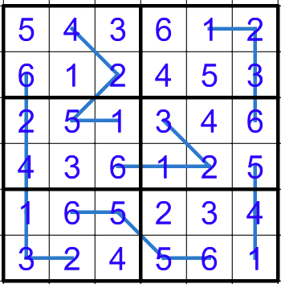:Step 1 – Deal with the leftmost column.
:Step 2 – Resolve the corners on the right.
:Step 3 – Resolve the bottom-right 1.
:Step 4 – Resolve the 1 in Column 4.
:Step 5 – Focus on the middle of the grid.
This column has a 0 pointing to it, so all of the cells must be unshaded. This means that all these cells must be on the loop. The corners only have two possibilities for entry and exit, so they must use those possibilities. Similarly, the cell to the left of the 1 only has two possibilities, so it must connect the two L-shapes.
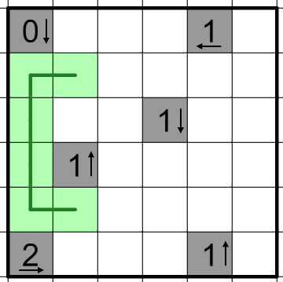The top-right corner can’t be part of the loop because there is only one way into it, so it must be shaded. This means that the square underneath it must be unshaded, and since it is in a corner, we can draw the loop through that square the only way it can go.
Similar logic can be used on the bottom-right corner.
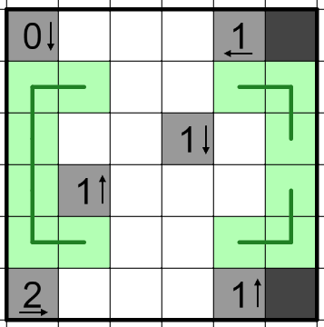The 1 in the bottom right forces a black square in either A or B. Imagine that it is in B. A would have to be unshaded, and therefore have the loop go through it. If this was the case, now it would have the loop go through it and since we’ve made a corner for it, the loop has to go up and to the right. However, this makes a small closed loop in the upper right hand corner, so doesn’t work. Therefore, the shaded square can’t be in B and therefore must be in A.
We can now make B unshaded and do some more loop logic. The upper-right L can extend one square in both directions thanks to A cutting off the pathways for them to go. B is now in a corner and is forced to go left and down.
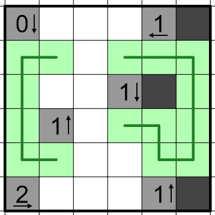There must be a shaded square in the bottom two squares in Column 4 thanks to the 1 in that column. The top square cannot have the shaded square because then the loop couldn’t get out of the bottom square, therefore the bottom square must be shaded. This also resolves the 2 in the bottom-left, forcing the other two squares to be unshaded. This gives us the diagram to the right.
This allows for a bunch of loop logic. Cell A must be on the loop, and since it’s in a corner it must go up and to the right. Cell B must be on the loop, and since it’s in a corner it must go up and to the left. Cell D is effectively in a corner, and must go up and to the left. This means that we have now connected our two big pieces of the loop in cell C.
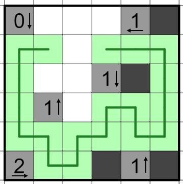Cell A must be shaded because there is only one entry into it. Because A is shaded, B must be unshaded and therefore be part of the loop. Since B is blocked off on two sides, it must go to the left and up. This forces C to be unshaded, and the only 2 places it can go is up and to the right, connecting B to the main loop.
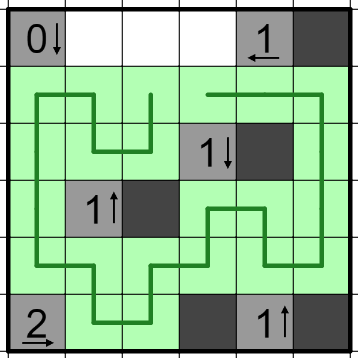The two ends of the loop can’t connect yet because we don’t know the shaded/unshaded for each of the squares. This means that both ends of the loop must go the only way that they can – up. This forces both of those squares to be unshaded, so the one remaining square is forced to be shaded thanks to the 1 clue pointing to it. All that’s left to do is to connect the loop to itself.
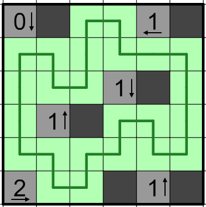Pay attention to the flavor text. How could you do that in this puzzle? (Consider your path to be clockwise.)
The things you’re drawing certainly look like letters. Kind of. It’s not perfect, but you should be able to figure it out. (2 is a little hard to see, but you should be able to figure it out.)
Highlight each square that contains a line that overlaps.
:Step 1 – Solve each of the individual puzzles.
:Step 2 – Compare the puzzles.
Each of the individual puzzles have solutions in the Walkthroughs.
:Equal Sum Line Sudoku Walkthrough
For each pair of puzzles, put the solution of the one in the clockwise direction on the starting position of the other one.
For letter #1, put the answer to the Slitherlink on the start to the Heyawake. It overlaps a bunch on the outside, but inside the grid it makes an N.
For letter #3, put the loop of the Yajilin on the start of the Equal Sum Line Sudoku and highlight the both squares where a line segment overlaps. These squares also make an N.
For letter #2, put the answer to the Equal Sum Line Sudoku on the start of the Slitherlink. The numbers that overlap make an A. (Close enough.)
For letter #4, put the answer to the Heyawake on the start of the Yajilin. There are 4 numbered Yajilin clues that overlap with the shaded Heyawake, and if you follow the arrows, it forms an O.
Put the letters in numbered order to spell NANO.
1.
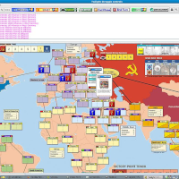2.
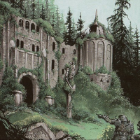3.
4.
5.
6.

7.
8.
9.
10.
11.
12.
13.
14.
15.
16.
17.
18.
19.
20.
21.
22.
23.
24.
25.
26.
27.
28.

29.

30.
31.
32.
Identify this pile of pictures is a common theme in the Mystery Hunt. There’s a wonderful ambiguity in pictures that isn’t present in words. This ambiguity allows the puzzle solver to represent groups in a more straightforward way by allowing the ambiguity to come from the pictures. As we have not as of yet developed computer code to divine the meaning of why a constructor placed a picture in the puzzle, it’s hard to cheese.
That being said, that doesn’t mean that there aren’t computer tools to help you. Various reverse image searches help you, although I’ve been particularly impressed by Google Lens. It shows up in Chrome when you right click an image, it has an interface where you can grab only some of the picture, and it stays on the right side of the browser as you go from tab to tab. Note that puzzle constructors know that reverse image search exists and will take it into account when writing puzzles. This can take the form of either manipulating images so that they’re harder to find in a reverse image search, creating their own images from scratch, or just assuming that you’re going to use it and build the puzzle around that.
:How the heck do I get started?
:I’m having trouble with identifying some of these pictures. They seem vague.
:I put the answer in the checker, but it said that I wasn’t done yet.
:I just want to know what this one picture is.
:I'm hopelessly stuck. Get me off the current part that I'm on.
Some of the pictures are going to be easier than others. 5, 15, and 20 should be relatively easy to look up if you don’t know them off the top of your head. 22 also should hopefully be very quick, and between 20 and 22 you should hopefully be able to get 21.
2, 6, and 28 are Magic the Gathering cards, so they should be reverse image searchable. For 28, make sure you get the card with exactly the same artwork.
From those ins, you should be able to start filling in the grid, and you may be able to get the connection between the pictures.
Each of the pictures has a number above it, and the name of that picture gets filled in the corresponding entry in the grid. Black squares are spaces and don’t get filled in, while yellow squares are filled in the same as white squares. If two squares have a line connecting them, then they have the same letter in them.
You’re not meant to figure out every single picture right away. Once you’ve got a couple entries filled out in the grid, you can use the letter patterns to help you narrow down what the adjacent pictures are. (Every pair except 7/8 has at least two letter connections, which should help.)
In addition, you also need to figure out what this puzzle is about. Google should be helpful here, and once you get that connection, it should be _a lot_ easier to back-identify a bunch of the pictures.
Make sure that you’re using the 2nd edition, not the 1st edition.
Did you put all the cards into the grid? Are you sure?
:1 | :2 | :3 | :4 | :5 | :6 | :7 | :8
:9 | :10 | :11 | :12 | :13 | :14 | :15 | :16
:17 | :18 | :19 | :20 | :21 | :22 | :23 | :24
:25 | :26 | :27 | :28 | :29 | :30 | :31 | :32
VASSAL
ESTATE
BANDIT
GARDENS
GOLD
REMODEL
WORKSHOP
BUREAUCRAT
CELLAR
LIBRARY
ARTISAN
MONEYLENDER
MOAT
MARKET
COPPER
PROVINCE
POACHER
VILLAGE
FESTIVAL
SILVER
SMITHY
WITCH
DUCHY
CURSE
SENTRY
COUNCIL ROOM
THRONE ROOM
HARBINGER
LABORATORY
MILITIA
MINE
MERCHANT
:Step 1: Identify as many of the pictures as possible and fill in the grid.
:Step 2: Read off the yellow letters.
:Step 3: Follow the cluephrase instruction.
Some of these identifications are hard, but they get much easier when you realize that these are all the cards in a Dominion Base Set. The easiest way to figure this out is to get a couple of the easiest identifications and stick them into Google.
This message reads “ANSWER IS THE MISSING ONE.” Don’t forget that the right half of the grid goes up instead of down!
This puzzle contains every card from the 2nd Edition Dominion Base Set except for one – CHAPEL. This is the answer.
(5 10)
Random anagramming is frowned upon in puzzlehunts. That’s not to say that you’ll never see it, but it’s a very specific tool used for a very specific reason. Trigrams solve the same purpose of anagramming but in a much more interesting way. You can use the :rules of English to help you order the trigrams to make the answer phrase. Most trigram puzzles also give you the :enumeration of each phrase, which you can use to help you figure out your placement. For example, if I saw the trigram NGJ in a puzzle, I would be looking to put it after a trigram that ends in an I, and also in a place such that there is a word break after the second letter.
I mean, English is a hellscape conglomerate of languages with millions of exceptions, but there _are_ rules.
:How the heck do I get started?
:I can’t break in on the first clue!
:I can’t break in on the second clue!
:I can’t break in on the third clue!
:I can’t break in on the fourth clue!
:I can’t break in on the fifth clue!
:I’ve solved all the clues, now what do I do?
:Okay, I’ve found all the cities, now what do I do?
:Okay, I’ve found the thing in each of the cities, now what do I do?
:I'm hopelessly stuck. Get me off the current part that I'm on.
The best way to start a trigram puzzle is to write out a series of blanks for each clue. Each letter should be one blank and put multiple spaces between words. Now, use parentheses to split off where each trigram is. You should get something that looks like this:
(_ _ _)(_ _ _) (_ _ _) (_ _ _)(_ _ _)(_ _ _)(_ _ _)(_ _ _)(_ _ _) (_ _ _)(_ _ _)
(_ _ _)(_ _ _)(_ _ _)(_ _ _) (_ _ _)(_ _ _)(_ _ _)(_ _ _)(_ _ _)_
(_ _ _)(_ _ _)(_ _ _) (_ _ _)(_ _ _)(_ _ _) (_ _ _)(_ _ _)(_ _ _)(_ _ _)
(_ _ _)(_ _ _)(_ _ _)(_ _ _) (_ _ _)(_ _ _) (_ _ _) (_ _ _)(_ _ _)(_ _ _)(_ _ _)(_ _ _)(_ _ _)
(_ _ _)(_ _ _)(_ _ _)(_ _ _)(_ _-_) (_ _ _)(_ _ _) (_ _ _) (_ _ _)(_ _ _)(_ _ _)(_ _ _) (_ _ _)_
What you have just done is created a diagram that tells you how the trigram breaks interact with the word breaks. This will make it much easier to see how to place some of the weird trigrams that need to be across word breaks to make any sense.
In addition, if a trigram has one “trigram” that is a single letter or a pair of letters, that trigram needs to go at the end, so you can fill those in immediately. That means we can make our blanks look like this:
(_ _ _)(_ _ _) (_ _ _) (_ _ _)(_ _ _)(_ _ _)(_ _ _)(_ _ _)(_ _ _) (_ _ _)(_ _ _)
(_ _ _)(_ _ _)(_ _ _)(_ _ _) (_ _ _)(_ _ _)(_ _ _)(_ _ _)(_ _ _)A
(_ _ _)(_ _ _)(_ _ _) (_ _ _)(_ _ _)(_ _ _) (_ _ _)(_ _ _)(_ _ _)(_ _ _)
(_ _ _)(_ _ _)(_ _ _)(_ _ _) (_ _ _)(_ _ _) (_ _ _) (_ _ _)(_ _ _)(_ _ _)(_ _ _)(_ _ _)(_ _ _)
(_ _ _)(_ _ _)(_ _ _)(_ _ _)(_ _-_) (_ _ _)(_ _ _) (_ _ _) (_ _ _)(_ _ _)(_ _ _)(_ _ _) (_ _ _)Y
At this point, start looking for short words – those will eliminate a bunch of trigrams and reduce the possibilities for bigger words.
You’re going to get this one starting on the ends and then meeting in the middle, especially since the first word with 8 letters is going to be a hard-to-get word. According to the blanks, one of the trigrams is just a word on its own, but there are a couple trigrams that can fit the bill. Focus on the 4 2 at the beginning and the 6 at the end. (The 6 may help resolve what the 8 2 before it should be.)
Yeah, I don’t blame you. It’s pretty hard to break in. It looks like the A should be the break in point, but honestly, it’s not going to help right away. The first thing you should do is look for the trigram that covers the two-letter word. There’s only one real good option for this. Once you have that, you now know the last letter of the 10, which can help in piecing that together. Once you have the first two words, it should imply what kind of words the last two are, and the first one is probably going to be the easier way to break into that. (Also, you’ve eliminated 4 trigrams at that point, so there are less possibilities.)
Take a look at the first two words. First, you’re looking for a trigram that when the first letter of a second trigram is added to it, makes a word. There are two good possibilities for what that word is (although there may be multiple trigrams that make one of those possibilities). Then, you need to add one more trigram to the remaining two letters to make another word. This should leave you with two possibilities. Now take a look at the next two words. Instead of 4 5, these are 5 4. Take a look at what you have and see what makes sense with that.
The break in to this clue is going to be the 4 2 3 in the middle. That 4 is going to be a trigram + another letter, the 2 is going to be the rest of that trigram, and the 3 is going to be on its own. There should only be one possibility for this section, and it should very much inform what kinds of words will come before and afterwards.
The 6-1 is pretty hard, but you can build up to that word from the front. At that point, you should know what the first letter of the 6-1 is, and take some guesses at what the rest of it is. You should be able to figure it out even if you aren’t sure what’s supposed to go in the 1. That is a reference to a specific thing that will help you resolve the rest of the clue.
Each of them seems like they’re cluing a place, right? The flavor text also seems to be hinting at a specific thing in those places.
There’s a certain thing in each of those cities that the flavor text is cluing.
Those things are famous for having a three-letter code. It’s a href="#Cluephrases">:recursion!
:Step 1 – Solve the first set of trigrams
:Step 2 – Solve the second set of trigrams
:Step 3 – Solve the third set of trigrams
:Step 4 – Solve the fourth set of trigrams
:Step 5 – Solve the fifth set of trigrams
:Step 7 – Follow the hint in the flavor text
:Step 9 – Solve the final clue
The answer to this set of trigrams is “SEAT OF THE PINOGANA DISTRICT IN PANAMA”.
The answer to this set of trigrams is “BIRTHPLACE OF EDUARDO CAMAVINGA”.
The answer to this set of trigrams is “WHAT THREE WORDS PELT DECAY DIVIDER”.
The answer to this set of trigrams is “SOUTHERNMOST CITY IN THE REPUBLIC OF COLOMBIA”.
The answer to this set of trigrams is “WHERE THE SINGLE-A TEAM OF THE DIAMONDBACKS PLAY”.
Each of these clues refers to a particular city. Get that city.
| Clue | City |
|---|---|
| SEAT OF THE PINOGANA DISTRICT IN PANAMA | El Real, Panama |
| BIRTHPLACE OF EDUARDO CAMAVINGA | Cabinda, Angola |
| WHAT THREE WORDS PELT DECAY DIVIDER | Impfondo, Republic of the Congo |
| SOUTHERNMOST CITY IN THE REPUBLIC OF COLOMBIA | Leticia, Colombia |
| WHERE THE SINGLE-A TEAM OF THE DIAMONDBACKS PLAY | Visalia, California, United States |
Each of these cities has an airport. Find that airport.
| Clue | City | Airport |
|---|---|---|
| SEAT OF THE PINOGANA DISTRICT IN PANAMA | El Real, Panama | El Real Airport |
| BIRTHPLACE OF EDUARDO CAMAVINGA | Cabinda, Angola | Cabinda Airport |
| WHAT THREE WORDS PELT DECAY DIVIDER | Impfondo, Republic of the Congo | Impfondo Airport |
| SOUTHERNMOST CITY IN THE REPUBLIC OF COLOMBIA | Leticia, Colombia | Alfredo Vásquez Cobo International Airport |
| WHERE THE SINGLE-A TEAM OF THE DIAMONDBACKS PLAY | Visalia, California, United States | Visalia Municipal Airport |
Every airport has a three letter code. Find the ones for these airports.
| Clue | City | Airport | Airport Code |
|---|---|---|---|
| SEAT OF THE PINOGANA DISTRICT IN PANAMA | El Real, Panama | El Real Airport | ELE |
| BIRTHPLACE OF EDUARDO CAMAVINGA | Cabinda, Angola | Cabinda Airport | CAB |
| WHAT THREE WORDS PELT DECAY DIVIDER | Impfondo, Republic of the Congo | Impfondo Airport | ION |
| SOUTHERNMOST CITY IN THE REPUBLIC OF COLOMBIA | Leticia, Colombia | Alfredo Vásquez Cobo International Airport | LET |
| WHERE THE SINGLE-A TEAM OF THE DIAMONDBACKS PLAY | Visalia, California, United States | Visalia Municipal Airport | VIS |
The enumeration for the final phrase is at the bottom. When the airport codes are treated as trigrams just like the previous parts of the puzzle, they can spell CABLE TELEVISION.
A twisted clue is a kind of puzzle that I have only seen in puzzlehunts. The basic idea is that the puzzle constructor has taken a clue and applied a transformation to every word. For example, let’s say that I wanted to take the clue ABC SERIES DANCING WITH THE BLANK and the transformation I am using is that I will change every word’s last letter to E. In addition, as standard for this puzzle type, I will remove all word breaks from the clue. This would give:
If a puzzle constructor is feeling nice, they’ll give you :enumerations, but they don’t have to. Your job as the solver is to turn that back into ABC SERIES DANCING WITH THE BLANK and answer it.
Well, not just that. The usual thing to do is to transform the word you just got as an answer using the transformation the clue was in. So while the answer to the clue is STARS, the word that this clue really wants is STARE.
Of course, it’s the Mystery Hunt, and all sorts of shenanigans can happen. This is not to mention that you still need to get a word or answer from all of this. This is a common puzzle type to have some element of :recursion in it.
The twisted clues puzzle here is deliberately simple to get you used to the puzzle type, but hopefully still interesting.
:How do I approach this kind of puzzle?
:I need help with the first clue.
:I need help with the second clue.
:I need help with the third clue.
:I need help with the fourth clue.
:I need help with the fifth clue.
:I need help with the sixth clue.
:When I apply the transformations to the answers to the clues, I don’t get a word.
:I don’t know what to do with the transformed answers.
:I'm hopelessly stuck. Get me off the current part that I'm on.
First, make sure you’ve read the :intro to this puzzle type so you know what kind of stuff to look for.
Then, start looking for substrings that look kind of like words. When you find some that you think might be words, look around them to see if the missing letters are present somewhere. See if you can do the same transformation to all of them to make them words again. A little bit of playing around will get you a long way here.
The end of the clue looks like it says TELEPHONE. Where is the E needed for it?
The clue seems to begin with a long word. How did the word turn into that string?
The end of the clue seems to just end with “TIMES ONE FURLONG”. Can we get another unit somewhere in there?
It’s pretty easy to read words in this one, but it’s worth noting whether the As are at the beginning or ends of words. (The ends of the clue should help you with that.)
The TV show in the middle of the clue should help guide you.
How can you make the last five letters of the clue a word?
Good. You shouldn’t. But they’re still useful for a reason.
What happens if you combine them? After all, the info in the puzzle doesn’t seem to be in any specific order, so this order must be important to the puzzle in some way.
:Step 1 – Solve the first clue
:Step 2 – Solve the second clue
:Step 3 – Solve the third clue
:Step 4 – Solve the fourth clue
:Step 5 – Solve the fifth clue
:Step 6 – Solve the sixth clue
:Step 7 – Combine all the resulting transformed clues.
This clue is “THIS WAS A WAY OF SENDING IMAGES OVER THE TELEPHONE”, but every word has had its last letter doubled and both moved to the front.
The answer to this clue is FAX, and when transformed is XXFA.
This clue is “SOMEONE WHO PERFORMS IN A THEATRICAL PLAY OR MOVIE”, but every word has had its first letter removed.
The answer to this clue is ACTOR, and when transformed is CTOR.
This clue is “UNIT OF AREA EQUALING ONE CHAIN TIMES ONE FURLONG”, but every A has been replaced with an F.
The answer to this clue is ACRE, and when transformed is FCRE.
This clue is “THIS ONION BASED SOFTWARE KEEPS YOU ANONYMOUS ONLINE”, but every word has had an A put at the front of it.
The answer to this clue is TOR, and when transformed is ATOR.
This clue is “GLADYS FROM SESAME STREET IS THIS KIND OF ANIMAL”, but every word has had its first letter doubled.
The answer to this clue is COW, and when transformed is CCOW.
This clue is “THE MITOCHONDRIA IS THE POWER HOUSE OF THE BLANK”, but every word has had its first letter moved to the end of the word.
The answer to this clue is CELL, and when transformed is ELLC.
When all of the transformed clues are put next to each other, you get XXFACTORFCREATORCCOWELLC. This is another twisted clue. It is “X FACTOR CREATOR COWELL”, but every first letter of each word has been duplicated and put at the end of the word. The answer to this clue is SIMON, and when transformed is SIMONS. The answer to this puzzle is SIMONS.
As mentioned, while we know a lot about puzzles and the Mystery Hunt in general, we at Palindrome don't know anything about what specifically is happening at tomorrow's Hunt. Well, that's not true. We definitely know one thing.
What do we definitely know about tomorrow's Hunt?
| Puzzle | Answer |
|---|---|
| 50/50/50 | ? |
| Black Box | PUERTO RICO |
| Logic Puzzles | NANO |
| The Chaotian-Puflantu Dictionary | ? |
| Twisted Clues | SIMONS |
| The Obligatory New York Times Crossword Reference | ? |
| Location-Based | PIERCE |
| Become an Expert | VISITOR CENTER |
| Picture Pile | CHAPEL |
| Crow Facts 3,000,000 | ? |
| Cryptic | GLASS LAB |
| Is This a Picture of Sports? | ? |
| Trigrams | CABLE TELEVISION |
| The World's Most Complicated Scavenger Hunt | ? |
| Identify, Sort, Index, Solve | REGISTRAR |
Oh right, you probably want to know about those 6 puzzles you didn't have access to. Yeah, sorry about that. It turns out that those puzzles are much harder than the others. Your teammates are working on them, but they would really appreciate it if you could solve the metapuzzle so they don't have to worry about solving them. Fortunately, metapuzzles are designed to be solved missing a few answers. See what you can do.
Metapuzzles are the backbone that gives the Mystery Hunt structure. They take it from being a large collection of hard puzzles to something with a form and a story. They also are the cleanest way of tracking progress through a Hunt. While many Hunts may not require you to solve every puzzle to finish, they usually will require you to solve every metapuzzle to finish. Each one that your team gets is a major accomplishment.
Solving metapuzzles is a lot like solving regular puzzles, but with the main difference that each metapuzzle uses answers to other puzzles as inputs to its puzzle. Review the tools from :Identify, Sort, Index, Solve again, as those will be the most helpful tools when approaching these. While all of your previous puzzle solving skills and approaches will help you here, there are a couple metapuzzle-specific things to point out.
First, when do you start solving metapuzzles? You will need the majority of the answers of a metapuzzle to solve it, but you do not have to have all of the answers. In fact, there may be a really hard puzzle that your team just can’t solve, so you’d really like to solve the metapuzzle without it. A good rule of thumb is to start looking at the metapuzzle when you have 50% of the answers, and start trying to extract an answer when you have 75% of the answers. Obviously, this will :vary from team to team. This does mean that you are usually solving a metapuzzle with some missing information and may mean that you have to make some educated guesses about what’s missing. This also can allow :backsolving.
Next, it is good to ask whether this is a pure meta or shell meta. Pure metas are meta puzzles that use no other information than the answers to the puzzles in that round, while shell metas give you some additional information that you need to consider. This can be anything from a couple lines of text to a :3d circuit on a borg cube. You could also end up using the titles to the puzzles, information from the round page, or other information from the puzzle pages themselves. Pure metas require you to find everything you need from the answers, which means a lot has to be packed into a little, but shell metas can go weirder. Different people have different opinions on what is a “good” meta on this axis, but honestly, it doesn’t matter when the meta is in front of you. This question just exists to make sure that you have all of the information you need to solve the puzzle.
Another question that is good to ask is whether the answers were chosen for their orthographic qualities or their semantic qualities. Answers chosen for their orthographic qualities are chosen because of the letters in them, no matter what those answers mean. Answers chosen for their semantic qualities are chosen because of what they mean, not any properties of the letters. (Well okay, maybe as part of that meta they’re chosen because they have letters in certain appropriate places, but that’s not usually considered part of the orthographic/semantic distinction.) Basically, is the meaning of the words or the spelling of the words important? Two examples of this include when each of the answers was a :consonancy of a planet plus one extra letter (orthographic) and when each of the answers was a :character who had a love interest with the name of a flower (semantic). Also, this is not an either/or question, but a sliding scale. A meta could use both orthographic and semantic properties of an answer.
One final thing to consider is where this meta is placed in the overall structure of the Hunt. First, this metapuzzle should be answering a question. In 2022, the Ministry :submetapuzzles were all characteristics of the creature that is being described, while in Pen Station, the metapuzzles were all items that you would need to help you construct the :Plot Device. But there may also be some shenanigans from the overall structure that you need to pay attention to. In a round where some puzzle answers are used in multiple metapuzzles, the individual answers can’t be as constrained and therefore the metapuzzle can’t use everything that the puzzle answer has to offer. If all the puzzles are mixed together and you need to figure out which puzzles go with which metas, then each of the answers should also contain a way to sort them into the appropriate meta. Basically, use how the Hunt fits together to navigate solving metapuzzles.
I also have :some notes about ordering in metapuzzles that I am splitting off for length reasons.
Metapuzzles are my favorite part of the Hunt, and I hope you get some joy from them as well.
When I say “vary from team to team”, I mean it. I start looking at metas before I even have any answers, and usually I try to figure out how the puzzle answers are associated after only a couple of answers. But I’m weird.
Sometimes, you can gain information about the answer to a puzzle by just looking at what the meta constraints were. For example, if you know from the meta that the answer must fit the pattern “CoCCCCooC”, where a C is any consonant and o is an “O”, that’s something that you can stick into Nutrimatic to get a series of possible answers. Maybe you can read the answer off just from that search, or maybe you can combine this with information you already know about the puzzle to figure out the answer. For example, if you had solved enough to know that the puzzle was about Doctor Who, then you would immediately jump to the answer TORCHWOOD.
Backsolving can be a very controversial topic with puzzlers, and you shouldn’t just backsolve willy-nilly. Different teams have different feelings about how much you guess at answers, and some people really don’t like it when the puzzle they’ve been working on for six hours has been backsolved under their noses. Consult with your team before seeing if backsolving is right for you.
This was the Sci-Fi Round of the 2018 Hunt. It was very impressive. Feel free to check it out, but just keep in mind that the page can be slow to load because of said 3D circuit on a borg cube.
This is the Pluto round from 2009.
This is World 1-2 from 2011.
Sometimes, a round can have multiple smaller metas feeding into one big meta, creating a two-tier structure in the round. You may also see this kind of thing referred to a metas & metametas.
I can hear you judging us over there. It was a Hunt where the theme was books! Plot Device made narrative sense!
Some notes about ordering for metapuzzles: (I’m pulling this into a different section because I want to reference this multiple times.)
Puzzles will very rarely give you a list of items in the order that they need to be for the final answer, and generally if they’re doing that it’s to deliberately make the puzzle easier. (There are definitely some exceptions to this I can think of, but it’s a good guideline.) Metapuzzles are trickier in this respect because you generally have less parts to the puzzle to play around with, which means that if everything else is constraining you too much, the puzzle constructor may just need to drop the idea of making the solvers figure out the order. In this case, the constructor will just give the solvers the order somehow. But how they give the order is the interesting bit.
The way that rounds are generally structured, there will be a round page with links to all the puzzles in that round. Either there will be a separate puzzle also :linked on that page for the meta, or there will be a place to submit the meta answer :on that round page. (Or of course, all sorts of possible :other shenanigans.) Note that this should be consistent throughout the Hunt. This means that if the puzzle constructor wants to give you the ordering, there are two possible ways for them to do it.
The first is that they can give it as part of the shell. This can be done for either method of metapuzzle presentation but is more often done for the separate page one. For examples of this in action, check out the 2022 metapuzzle Introspection or the 2021 metapuzzle Football. Both of these give the order just in the shell, making it completely clear what order the puzzles are supposed to be in.
The second is that they can just put the list of puzzles in that order. Normally, the list of the puzzles on that page is in alphabetical order, as a “nothing up my sleeve” order. But that’s also arbitrary. There’s no reason that order can’t be clueful. The nice thing about doing this is that it doesn’t add anything extra to the round. It’s just there, exactly the same as other rounds, but important. You can see this in action in the 2017 metapuzzle The Chemist or the 2011 metapuzzle World 1-1. (Also the 2022 round :Reference Point)
The point of writing all of this is to highlight how important that round ordering is. If it’s in alphabetical order, then don’t worry about it. But if it’s not, be very suspicious of that order.
I also have an inside baseball story about all of this from the 2022 Hunt. It’s not necessary to read to get the idea here, but if you’re interested in behind the scenes stuff, :read on.
As an example for this, take Lake Eerie from the 2022 Hunt, and scroll down to the list of puzzles. The metapuzzle, “The Graveyard” is bolded and has its own page with its own answer submission box. When you get the solution to this round, you would submit the answer on this page. You can also see this behavior from the round Noirleans from the same Hunt.
Note that this is irrespective of whether the puzzle was a pure meta or a shell meta. Noirleans was a pure meta, and it contains a page with only the flavortext for the meta, while Lake Eerie has both flavortext and a shell.
As an example for this, take The Despondent Dynast from the 2017 Hunt. The flavortext for the metapuzzle is on the same page as the list of the puzzles and the answer submission box is in the top of this page. You can also see this behavior from the round The Dismal Dungeon from the same Hunt.
Note that this is irrespective of whether the puzzle was a pure meta or a shell meta. The Despondent Dynast is a pure meta and therefore just has the flavortext and the submission box on the round page, while The Dismal Dungeon’s round page has both of those things and also the shell for the meta (the grid of letters).
Of course, if the Hunt is doing shenanigans, then the round pages are going to look a little different. The 2015 Hunt essentially had one round page with every puzzle in it, as you unlocked puzzles from various rounds the deeper and deeper your submarine went. The 2019 Hunt’s metapuzzles weren’t associated with rounds, but with pairs of rounds, and you had to figure out which answers from the pairs of rounds went with that metapuzzle. This meant that there wasn’t a clean page that listed the puzzles for the round and the corresponding meta. 2012 is the exception to the “it should be consistent” comment, where the show metas were pure metas that didn’t have their own page, while the critic rounds were shell metas that had their own page.
Basically, lots of shenanigans possible, but it should be informed by what that Hunt is doing.
Okay, this one is actually a bit weirder. In this round, the answers are all in alphabetical order except that You Took the Fifth is first. This is because when you solve the metapuzzle, the answers form a loop. In order to read the answer off, You Took the Fifth needs to be the first letter you read. It was moved up in the order to indicate its importance while also letting solvers figure out the rest of the loop. (As to how well that worked, well, I dunno.)
This is going to contain spoilers for the 2022 Ministry meta. So you know, fair warning.
Some hunts use the technique of adjusting the presentation order of the puzzles more than others. For example, in 2021, the only round that does this is Football, and they also give the order on the meta shell, while in 2017, this is very common. How important this technique is depends on the team, but as a solver it is always important to keep it in mind.
When we were writing the 2022 Hunt, we decided to use this rely on this order a couple of times. And by “we decided” I mean “I decided” because I was nominally in charge of this. There are a couple of metas where important information was conveyed this way, including New You City, Heartford, Reference Point, Sci-Ficisco, and important to this story, The Ministry.
The general way that the Ministry worked was that there were 25 individual puzzles that you needed to divide up into 5 submetas. Then, once you had those answers, you unlocked the Ministry meta, which needed both the answers to the submetas and the answers to all of the 25 individual puzzles again. If you’re not familiar with past Hunts, the fact that you need to use all 25 answers again is unusual. Oftentimes metas with submetas like this use only the submeta answers. This needed to be clued in some way. In addition to this, we needed to give the ordering of the puzzles to use in the Ministry Meta somewhere.
As the editor of this puzzle/one of the people who was in charge of implementing this puzzle, I decided that the best way of doing this was to change the presentation order to be the meta ordering. This would both give the ordering and also clue that you needed the puzzle answers again since you hadn’t used the presentation order before this puzzle. It turned out that this didn’t work. Teams got stuck because they didn’t recognize that the individual puzzles contributed to the meta. Oops.
Anyway, I mention this because I feel like this is a thing that I put more emphasis on than others, and I think it’s a bias I have. As a teacher, it’s worth admitting your biases to your students. I shouldn’t be your only source of information, and it’s worth being blatant about stuff like this rather than forcing you to cyberstalk me to figure this stuff out.
:What's up with the names of the puzzles whose answers I don't have?
:How the heck do I get started?
:I know how all the answers are connected, but what do I do with that?
:I’ve turned it into letters, but I can’t read off an answer.
:I'm hopelessly stuck. Get me off the current part that I'm on.
They’re not relevant to the puzzle. I just needed to fill those cells of the table, so I put some small Hunt jokes in there.
50/50/50 is a play on 50/50, which was an infamous puzzle in 2013 that was just too hard. I know it can seem ridiculous to say that a puzzle is too hard for the Hunt, but this was. The solution is worth a read. It’s… wow.
Chaotian is a constructed language that was created specifically for the MIT Mystery Hunt. Puflantu is a constructed language that was created specifically for the 2019 Galactic Puzzle Hunt. A theoretical puzzle called “The Chaotian-Puflantu Dictionary” is someone’s dream puzzle, but not mine. I would run screaming.
The Obligatory New York Times Crossword Reference is there because the NYT Crossword has often hidden Hunt-relevant information or is otherwise the target of a puzzle. Every Hunt needs one!
Crow Facts 3,000,000 references Crow Facts and Crow Facts 3000. This would be the obvious next step.
Is This a Picture of Sports? is a joke that nerdy puzzle hunters aren’t great at identifying sports. It’s not actually true – there are plenty of sports nerd puzzle hunters, but we still joke about the puzzle anyway.
The World’s Most Complicated Scavenger Hunt plays off the traditional scavenger hunt. As the Hunt has grown in team sizes, they have tended to get more and more complicated unless writing teams make a significant effort to scale it back down. (There may not be one in the future for logistics issues.)
The flavor text asks “Do you even know where you are right now?”. So do you know? Where are you right now?
Honestly, even if you can’t get the full answer yet, you really should try to figure out how these answers are related before you get new answers.
That being said, if you want more answers, you can reveal the answers down here:
:The Chaotian-Puflantu Dictionary
:The Obligatory New York Times Crossword Reference
:The World's Most Complicated Scavenger Hunt
SENSABLE
LISA T SU
OCEAN ENGINEERING
BITTER MAGNET
TECHNIQUE
ELECTROCERAMICS
The first question we want to ask ourselves is this more likely to be an orthographic meta or a semantic meta? (Orthographic is based on the letters, semantic is based on the meanings) The answers don’t look too weird. The Twisted Clues’ answer looks a little strange and is probably picked for being a name, and the Cryptic’s answer is a little strange, but it seems to be a real phrase. Given that the rest of the words seem relatively normal, it would be a good guess to say that it’s semantic rather than orthographic.
So now, you need to consider what these answers are and how they connect to the theme of the meta aka looking at the flavor text. Googling multiple answers may help you here.
It can be useful to consider what these answers and their corresponding places have in common. Since they’re all on campus, what is a piece of information that these places all have?
This uses alphanumerics (A = 1, B = 2, C = 3…)
Keep in mind that the answer won’t contain any of the punctuation that is in the phrase, and it will hide all the word breaks, which will make it harder to parse. Perhaps look for individual words and see what that does to the rest of the phrase. Keep in mind it needs to answer the question posed by the meta.
If you just don’t have enough to do this with, that’s okay. You should feel free to reveal more answers.
:Step 1: Figure out what all the answers have in common.
:Step 2: Get additional info for each of the answers.
:Step 3: Turn that info into letters.
:Step 4: Interpret that phrase.
Each of the answers can describe a place on MIT’s campus. In some cases, the answers is the name of a whole building, and sometimes it’s a place inside a building.
Since each of these is a place on campus, it can be associated with a building, and therefore a building number.
| Building | ID |
|---|---|
| ? | ? |
| PUERTO RICO | 20 |
| NANO | 12 |
| ? | ? |
| SIMONS | 2 |
| ? | ? |
| PIERCE | 1 |
| VISITOR CENTER | 7 |
| CHAPEL | 15 |
| ? | ? |
| GLASS LAB | 4 |
| ? | ? |
| CABLE TELEVISION | 9 |
| ? | ? |
| REGISTRAR | 5 |
You can use alphanumerics (A = 1, B = 2, C = 3…) to turn these building numbers into letters.
| Building | ID | Letter |
|---|---|---|
| ? | ? | ? |
| PUERTO RICO | 20 | T |
| NANO | 12 | L |
| ? | ? | ? |
| SIMONS | 2 | B |
| ? | ? | ? |
| PIERCE | 1 | A |
| VISITOR CENTER | 7 | G |
| CHAPEL | 15 | O |
| ? | ? | ? |
| GLASS LAB | 4 | D |
| ? | ? | ? |
| CABLE TELEVISION | 9 | I |
| ? | ? | ? |
| REGISTRAR | 5 | E |
The phrase ?TL?B?AGO?D?I?E can be solved as IT’LL BE A GOOD TIME.
The two ins to this is the ?TL? and GO?D. It is reasonable to guess IT’LL and GOOD from the info you have, and then the rest is a reasonable guess.
These puzzles were written for the 2023 How to Hunt Seminar at MIT on January 12, 2023.
Cryptic was written by joon pahk. Logic Puzzles was written by Shai Nir Hana. Example clues in the cryptic section are taken from Transformations. Everything else was written by Jen McTeague.
This cool expandable stuff is made using Nutshell, an awesome script written by Nicky Case. You should check their work out - I use their stuff in my classes all the time!.
Nothing in this About section is a puzzle. Also this was not written to hide anything for any specific Mystery Hunt puzzle, but I wouldn't put it past teammate or anyone future team to somehow make it part of one without me knowing. I mean, teammate isn't going to see this until like a week before the Hunt begins, but I am very familiar with writing a last-minute puzzle.